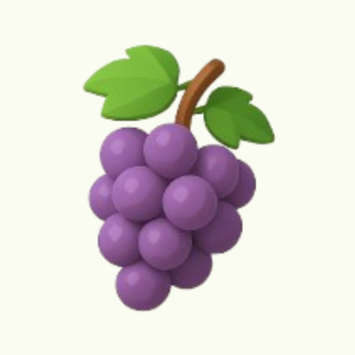
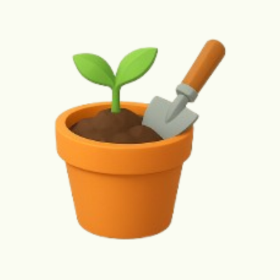
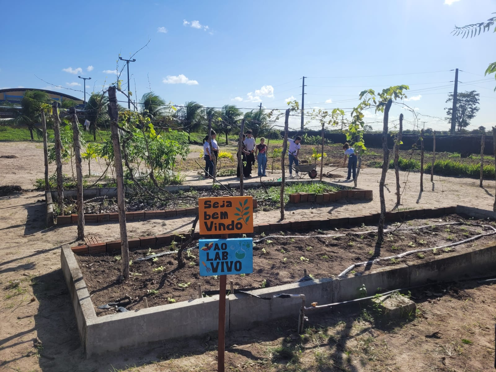

- Educação ambiental
-  Alimentos orgânicos
-  Ensino multidisciplinar
Sobre o Projeto
Fundado em 2023, o LABVIVO é mais um laboratório do Instituto Federal do Rio Grande do Norte - Campus Canguaretama. Diferente dos laboratórios tradicionais, ele se destaca por ser um espaço ao ar livre e vivo, fazendo com que alunos e servidores possam se conectar com o meio ambiente, que também é parte essencial no processo de ensino-aprendizagem.
São desenvolvidas atividades sustentáveis e de caráter multidisciplinar, com incentivo à prática ecológica, além do cultivo de alimentos orgânicos livres de agrotóxicos. Estamos de braços abertos para acolher novas propostas de desenvolvimento de projetos de pesquisa, ensino e extensão em qualquer área do conhecimento, com o intuito de fortalecer o vínculo com nossa instituição, o IFRN, e a comunidade.
Ações
O LABVIVO desenvolve atividades que unem conhecimento, prática e sustentabilidade. As ações realizadas promovem a integração entre áreas diferentes de conhecimento, e isso proporciona experiências únicas aos alunos e à comunidade. Por isso, por meio de projetos educacionais, ações sociais e visitas tanto externas quanto internas, buscamos transformar o aprendizado em vivência real, com um impacto direto no meio ambiente e na sociedade.
Seja no cultivo de hortaliças, no ensino aplicado ou na troca de saberes com outros grupos e instituições, o LABVIVO se firma como um espaço vivo de inovação, consciência ecológica e construção coletiva do conhecimento. Veja algumas de nossas ações:
Gostou do que viu por aqui? Se algo chamou sua atenção, que tal dar o próximo passo e entrar em contato com a gente? Adoraríamos ouvir suas ideias, receber seu apoio ou contar com sua participação nos nossos projetos. No final da página, você encontrará informações para nos acompanhar, ficar por dentro das novidades e falar conosco. Sua presença pode fazer toda a diferença!